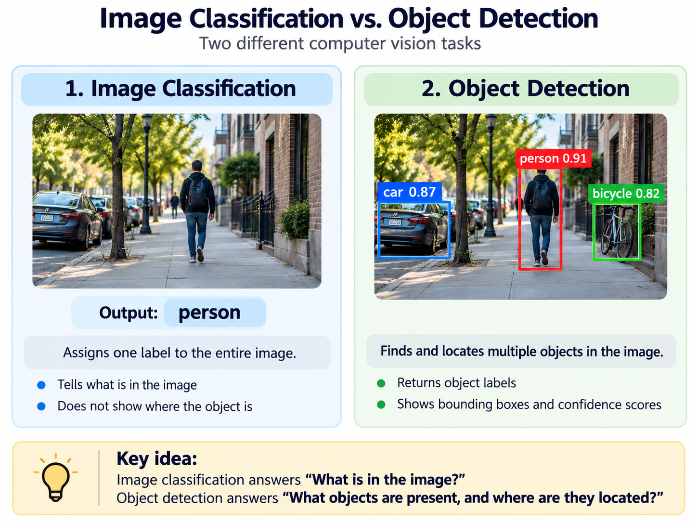
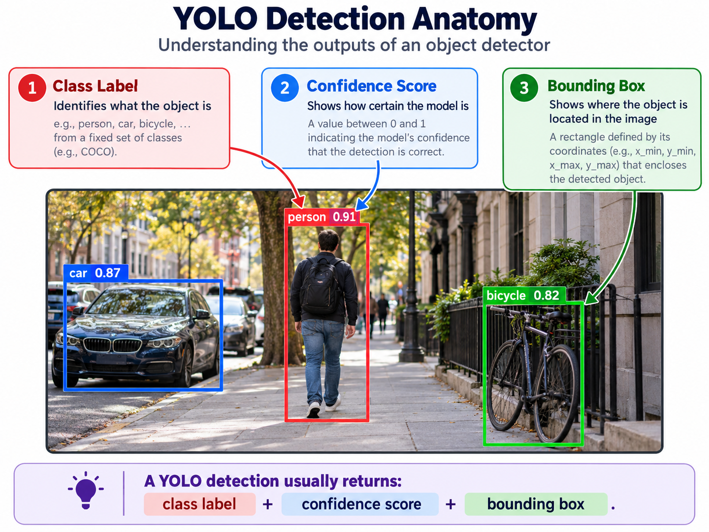

Image Classification vs. Object Detection
Image classification assigns a label to an entire image. For example, a classification model may decide that an image contains a bicycle, but it does not normally show where the bicycle appears.
Object detection goes further by identifying both the object category and its location in the image. This is especially useful for obstacle detection because a mobile assistive system needs to know not only what object is present, but also where it appears in the user's field of view.

Bounding Boxes
Object detectors usually represent detected objects using bounding boxes. A bounding box is a rectangle that surrounds the detected object and describes its position within the image.
Each detection can also contain an object label and confidence score. Modern mobile obstacle-detection systems use this information to identify objects that may be relevant to navigation [1] [3].
Confidence Score
A confidence score represents how certain the model is about a detection. For example, the system may identify a person with a confidence score of 0.91. A mobile application can use a confidence threshold to remove detections that are considered too uncertain.
Choosing the threshold involves a trade-off. A threshold that is too high may cause the system to miss real obstacles, while a threshold that is too low may create too many incorrect detections.

YOLO
YOLO stands for "You Only Look Once." It is a family of object detection models designed to identify and localize multiple objects efficiently. YOLO-based methods have been used in several assistive navigation systems for blind and low-vision users [1] [2] [4].
YOLO is particularly attractive for mobile applications because obstacle detection needs to happen quickly. A warning that arrives too late may no longer be useful to a person who is already moving toward an obstacle.
Running Object Detection on Mobile Devices
Mobile devices have less processing power, memory, and battery capacity than larger computer systems. Because of this, developers often need to use smaller or optimized versions of object detection models.
Research using YOLOv8 on Android shows the importance of balancing model accuracy and inference speed. Smaller models and lower input resolutions can run faster, while larger configurations may provide stronger detection performance at the cost of additional computation [3].
Improving Detection for Navigation
Standard object detection models are not always optimized for assistive navigation. Obstacles may be small, partially hidden, or surrounded by many other objects.
YOLO-OD was proposed specifically to improve obstacle detection for visually impaired navigation and addresses challenges such as differently sized objects, cluttered environments, and occlusion [4].
Object Detection Is Only the First Step
A correct object detection does not automatically mean that the object is an obstacle. For example, a detected vehicle may be far away or outside the user's walking path.
Some assistive systems therefore combine object detection with depth estimation, bounding-box information, or other contextual information before deciding which object should be communicated to the user [5] [6].
This distinction is important throughout this tutorial: object detection tells the system what and where an object is, while obstacle detection requires deciding whether that object is relevant to safe navigation.